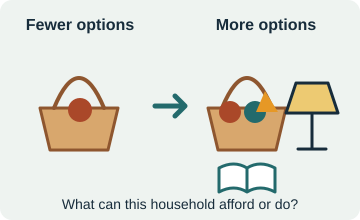
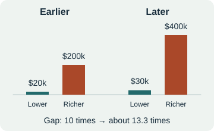

Choose a unique username with at least two letters followed by at least two numbers, such as RIVER27 or OTTER204. Do not use your real name or your school student ID. Write your username down: use exactly the same one whenever you return, including on another device.
01 / THE BIG INQUIRY · 0–10 MIN
More possibilities. For whom?
Industrial Transformation
How did industrial technology expand what people could do? What benefits and harms did it help create, who experienced them, and how did people respond?
I can explain what the Industrial Revolution was, how it expanded human possibilities, and investigate what determined who benefited.
What changed?
The Industrial Revolution was a long transformation in how people produced goods: machines, new energy sources, and factories reorganized work. It began in Britain in the eighteenth century and spread unevenly. In this lesson, we focus on the United States, especially 1865–1920.
Machines increased what workers could produce. Steam engines made coal a source of mechanical power. Factory owners organized workers and machines in one production system. These changes expanded capability and created new conflicts over work, wealth, and the environment.
Quick partner check
One partner explains how a machine changes production; the other explains why the way work is organized matters. Then switch.
WATCH WITH YOUR CLASS · ABOUT 5 MIN
How inventions change history
The cotton gin is an earlier example, patented in 1794 after its development in 1793. It separated seeds from cotton; it did not pick cotton. Greater processing capacity increased demand for cotton and helped expand slavery. Watch for the connection between an invention and the institutions around it.
Video: Kenneth C. Davis / TED-Ed. Your teacher will play it.
Discuss the video with a partner: What became easier to do, and why did that fail to improve everyone’s life?
02 / OUR PLACE IN TIME · QUICK TEACHER ORIENTATION
When are we studying?
Our focus is the United States from 1865 to 1920. The shaded area shows where those 55 years fit within the past 2,000 years. Equal horizontal distances represent equal amounts of time.
Use the buttons to zoom in on our study period. The graphs below show changes in production, survival, and lighting; this timeline shows when we are studying.
03 / THREE ANCHOR INVESTIGATIONS · 10–30 MIN
What became possible?
For each investigation: identify a pattern, use a number, and ask what the measure leaves out. A trend shows a change; it does not by itself prove its cause.
A
PRODUCTION
More output per person
GDP per capita divides the value of economic production by population. It is an average, not a worker's pay. The values here use purchasing power adjustments and 2011 international dollars.
Selected historical estimates, Maddison Project Database 2023. The early comparison is England (through 1700), then Britain/UK; coverage changes. Straight segments connect benchmarks, not observations for every intervening year. These are not world averages.
Read the benchmark values
B
SURVIVAL
More chances to live
Life expectancy at birth summarizes survival under a year's death rates. High infant mortality pulled the average down; a value of 47 years does not mean most adults died at 47.
Year 1: best guesses, not measured statistics. We use about 20 years of life expectancy and about 400 infant deaths per 1,000 births as an illustrative ancient reference from one Roman-era reconstruction (Langner, 1998). Its evidence comes from later Roman centuries; other reconstructions differ. These are not precise year-1 or world averages. The dashed bridge connects different populations for comparison; it does not show what happened in every intervening century. Solid lines show selected U.S. benchmarks: life expectancy 47.3 in 1900 to 76.8 in 2000; infant deaths about 100 to 6.89 per 1,000 births. Early registration coverage and estimation differ from later national statistics. The 1950–1990 infant rates use mortality/natality files; the 2000 value uses linked birth–infant death records. Sources: Langner; CDC/NCHS.
Imagine 1,000 births. The early estimate means about 100 infant deaths; the later rate means about 7. This comparison describes populations, not the fate of any particular child. Notice the recent rise in life expectancy and the downward bend in infant mortality. Sanitation, nutrition, public health, and medicine all helped; industrial technology alone does not explain the changes.
Read the data, then make an inference
Answer the three questions below. Use short answers and include units. Your teacher will explain the life-expectancy misconception and the uncertainty of the ancient reference.
C
EVERYDAY CAPABILITY
The cost of keeping the light on
Compare the labor time needed to pay the operating cost of the same light service: 1,000 lumen-hours. Think of a light producing 1,000 lumens for one hour.
Nordhaus, Table 1.6, pp. 52–53. Selected U.S. technologies, fuel/energy operating cost only; equipment and installation excluded. Wage measures change across dates. The final observation is 1992, not 2000. Lower cost does not demonstrate that every household had access.
Read the data, then make an inference
Answer the three questions below. Read exact values from the table. Discuss one possible benefit and one possible harm of extending activity after dark with your partner.
Optional: more evidence to explore later
These eight supporting cards are available for further exploration. They are not required for today’s completion.
04 / WHO BENEFITS? · 30–47 MIN
A bigger economy can still leave a wider gap.
Absolute well-being

What can a person afford or do?
Food, lighting, travel, and health may improve even if the gap with richer people grows.
Relative position

How does income compare with others? Illustration: k means thousand dollars.
A larger gap can exist alongside improvements in both groups' lives. See the made-up example below.
Security and participation
Can people keep opportunities and have a say?
Can a person keep their job, obtain care, attend school, and influence decisions? More goods do not automatically create these protections.
Try the logic—with dollars
This is a made-up example, not historical wages. Compare annual household income. Assume prices, household size, and needs stay the same.
Household
Earlier income
Later income
Increase
Lower income
$20,000
$30,000
$10,000 = 50%
Richer
$200,000
$400,000
$200,000 = 100%
Absolute change: the change in a household’s own income or purchasing power. A 50% increase means adding half of the starting amount: half of $20,000 is $10,000.
Relative position: how one household’s income compares with another’s. To compare, divide the richer household’s income by the lower-income household’s income in each year.
Historical global estimates put the average income of the top 10% at about 18 times that of the bottom 50% in 1820, and about 41 times in 1910. These are global reconstructions, not a U.S. series. A ratio alone cannot tell us whether the bottom half's absolute income rose or fell. Source: World Inequality Report 2022, Figure 2.2.
Turn percentages and ratios into people and dollars
Percentage of people: in a group of 100, the top 10% means the 10 people with the highest incomes; the bottom 50% means the 50 with the lowest incomes. These labels do not say what percentage of all income those people receive.
Income share: in a made-up community with $1,000,000 of total annual income, a group receiving 60% receives $600,000 altogether; a group receiving 7% receives $70,000 altogether. These are group totals, not each person's income.
Average-income ratio: if one group's average annual income were $10,000 and another's were $410,000, the second would be 41 times the first. These dollar amounts illustrate the math; they are not estimates of 1910 incomes.
Who received the income? Three U.S. snapshots
A quintile is one fifth of the population: 20 out of every 100 adults, ranked from lowest to highest income. Each pie shows how the total income was divided, not how the population was divided. With equal incomes, each quintile would receive 20%.
Income is a flow over a period, such as earnings and investment income during a year. Wealth is the value of assets minus debts at a point in time. These charts show income shares, not wealth or average dollar incomes.
Comparable concept throughout: estimated U.S. pretax national income shares among adults age 20+, using WID’s equal-split-adult method (income shared equally within a couple). This is broader than wages or Census household money income; it includes labor and capital income and pension/unemployment insurance benefits, before income taxes and most redistribution. The same adult can belong to the top 20%, top 10%, and top 1%: do not add those rows together.
Source: World Inequality Database, U.S. bulk data retrieved October 21, 2026; sptincj992 (the bulk file’s notation for sptinc992j). Quintiles calculated by subtracting cumulative shares. 1880 is a low-confidence, model-based Gilded Age reconstruction, not a modern survey; 1950 and 2024 are also estimates. 2024 is the latest year in this comparison, not a claim about 2026. Methods and source quality differ across periods; these are snapshots, not an annual trend. See WID’s historical methods. Other researchers’ definitions and estimates may differ.
Discuss: what would make a distribution fair?
Should fairness mean equal incomes, rewards for contributions, equal opportunity, or making sure everyone has enough? Consider more than one standard. A pie chart cannot choose a moral standard for us.
Compare possibilities, then ask about access.
Three housing examples—not a ranking of people's worth, happiness, or communities. The photos show different places and dates and are not to the same physical scale. An exterior cannot tell us a family's income, utilities, or daily experience.
What do we mean by poverty?
Absolute poverty: having resources below a defined minimum standard of basic needs, such as food, clothing, and shelter. For comparisons over time, an absolute line is held constant in purchasing power, with adjustments for prices. People still have to decide which needs and minimums count.
Relative poverty: having income far below the typical income in one’s society. One common measure is below 50% of the median, after accounting for household size. The median is the middle income when incomes are ranked. A relative threshold can rise as society becomes richer.
These definitions answer different questions. Having electricity or a phone does not by itself establish whether someone is above either poverty line.
Frederick and Louise Vanderbilt's mansion, Hyde Park, New York. Modern photograph: National Park Service (NPS photo).
The Hyde Park mansion had electricity, hot and cold running water, and flush toilets. These conveniences existed, but this exceptional household cannot represent most Americans.
Homes of cotton-mill workers, Lydia Mills, Clinton, South Carolina, December 2, 1908. Lewis W. Hine / Library of Congress, nclc.01477; no known publication restrictions.
This documented mill-community example helps us imagine a teenager's home. It is not our fictional interview character's actual home in Vermont, or a picture of every mill family. Choices depended on wages, work demands, school access, and local services.
Apartments are homes for people across income levels. This public-housing example illustrates one option; lower-income households also live in many other kinds of homes.
For our fictional comparison, imagine a household with electricity, school access, and an internet-connected phone, but rent pressure or insecure work. The photo does not establish these facts about its residents.
Discuss together: one household, two definitions
Imagine same-sized households. One household has $26,000 of annual after-tax income. A fictional basic-needs poverty line is $24,000, while half of the $60,000 median is $30,000. It is above the first line and below the second. What does each definition help us notice?
These are teaching examples, not official U.S. thresholds. Assume the basic-needs line accurately reflects local prices.
05 / EVIDENCE AT YOUR SEAT · 47–62 MIN
What turned new capabilities into benefits—or harms?
Work with a partner at your seat. Open Card 1: machinery and Card 3: clean water. Then choose Card 4, 5, or 6. Card 2 and the other unchosen cards are available if you have time.
Read the card and examine its image or diagram. You can open the image full-size or use “Read the card text.”
Write one specific evidence note for each of your three cards.
Use TWO cards to explain ONE graph outcome. Identify a benefit and a harm or unequal effect.
Tell your partner your explanation. Ask each other: “What evidence supports that?”
Your three brief evidence notes
Optional vocabulary practice
OPTIONAL / RETRIEVAL PRACTICE
Match the language to the idea.
Try from memory first. Match each term to a definition. After checking, revisit terms you missed and try again. The check records your first score and your latest score.
06 / SAVE & SUBMIT · 62–67 MIN
Finish this part before the interview.
Check all 15 required response fields. The optional evidence cards and vocabulary practice do not count toward today’s completion.
Click Save now and wait for “Saved to spreadsheet.” If saving fails, keep this tab open and tell your teacher.
Download your PDF. Open it and check your username, completion status, and responses.
Submit the PDF to the Google Classroom assignment your teacher identifies.
Then open Boost and your Classroom reflection document. After your teacher’s model, ask four main interview questions and at least two follow-ups. Use the six-question bank in the PDF as choices; four are required today. Take brief notes, check an interview claim against class evidence, and write your own reflection in the Classroom document.
The PDF is your pre-interview completion submission. Next: 67–72 minutes, interview model; 72–87, Boost interview and evidence check; 87–97, formative reflection; 97–100, submit. Use the existing rubric for the reflection.
EVIDENCE NOTES
Sources and boundaries
Historical measures are reconstructions or estimates. Use the labels and notes, especially when comparing different populations or dates.